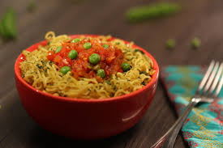

Maggi

Description
Maggi is a very famous dish in India. It is a household name. I have been eating maggi
since I was a kid. Maggis is a cooked noodle often mixed with a variety of vegetables.
It sold with a packet of masala which gives maggi it's taste.
Ingredients
- maggi
- maggi masala
- water
- vegetables
Steps
- Pour a cup of water in to the pan and warm it up
- Break the brick of maggi into two and put it in the water
- Stir for a while and then spread the masala evenly over the pan
- Put the pieces of vegetables inside the pan and stir well
- Cover the pan with a lid and wait for 5min for the maggi to be ready